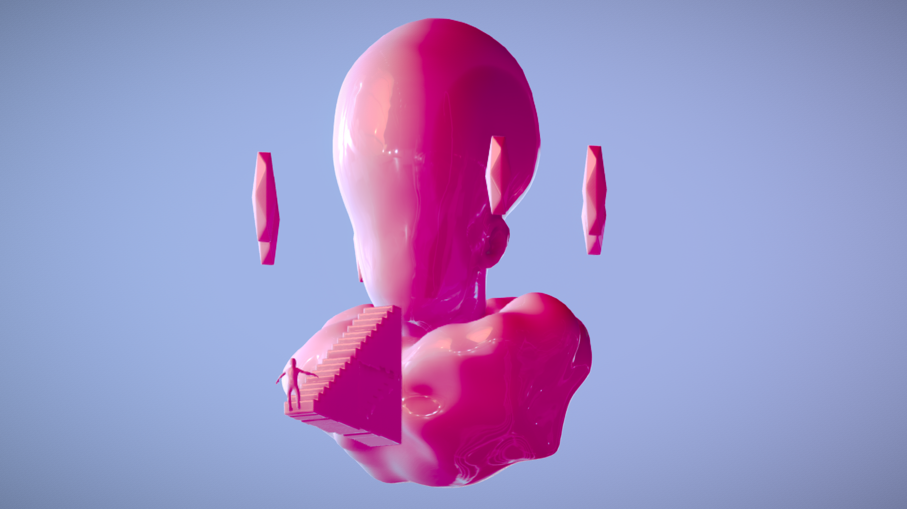

3DMeshMash
Stairway to God
Medium: 3D Modeling (Via MeshMixer)
Dimensions: Online Desktop

For this piece, I first planned on creating a "doomed" or "apocalyptic" environment with a staircase that led to "heaven". However, I scrapped the disturbed environment and decided to just create the staircase and "heaven". Heaven is depicted with an all mighty being waiting for someone to reach the top of the staircase. I made this all mighty being look and seem like some sort of God or something watching over all living being.
What inspired me to create this piece was me listening to a collection of music all the while trying to figure out what I want to create for my next project. The song "Stairway to Heaven" by Led Zeppelin came up during my thinking process and I just decided to create an environment/piece that not only went with the song title but also a piece that would fit well with the song playing in the background.
View here